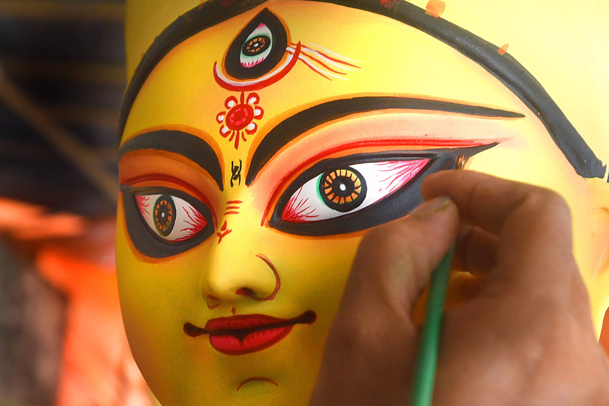

DURGA PUJA
Durga Puja, also known as Durgotsava, is one of the most prominent and widely celebrated festivals in India, particularly in the state of West Bengal. This grand Hindu festival honors the goddess Durga's triumph over the demon king Mahishasura and is marked by elaborate ceremonies, artistic decorations, and cultural extravaganzas.
Durga Puja usually spans ten days, culminating in the grand celebration known as Vijayadashami or Dussehra, which symbolizes the victory of good over evil. The festival typically falls in September or October, coinciding with the Navaratri celebrations observed in many parts of India.
The heart of Durga Puja is the construction of exquisitely crafted idols of the goddess Durga, who is depicted as a powerful and fierce warrior riding a lion and wielding various weapons. These idols are installed in elaborately decorated temporary structures called "pandals." The idols are often adorned with intricate clothing, jewelry, and other accessories, showcasing the artistic and creative talents of local artisans. The pandals are the center of attraction during the festival, drawing crowds with their unique themes and decorations.

During the ten days of Durga Puja, devotees offer prayers, sing hymns, and perform traditional dances like Dhunuchi Naach. Cultural programs, including music, dance, and drama performances, add to the festive atmosphere. On the last day, the idols are taken in grand processions through the streets, accompanied by music and dance, before being immersed in rivers or other bodies of water, symbolizing the goddess's return to her celestial abode.
Durga Puja is not just a religious event but a cultural and social extravaganza. It brings communities together, encourages artistic expression, and fosters a sense of togetherness and unity among the people of West Bengal and Bengali communities worldwide. The festival's grandeur and fervor make it an unforgettable and integral part of India's rich cultural tapestry.